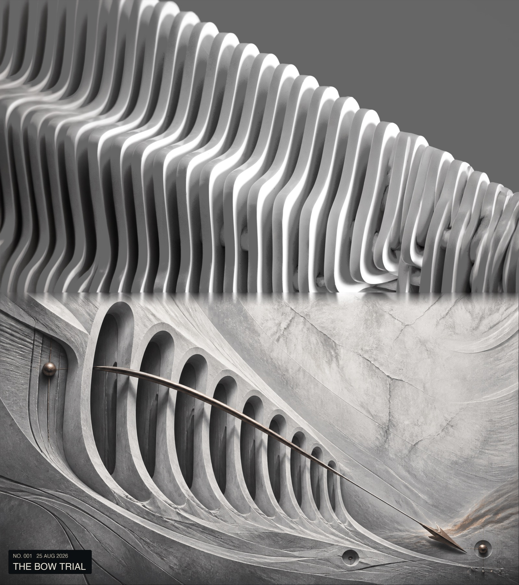

保留现实
上联不裁切、不重绘、不调色；照片始终是叙事起点。
Photography × Homer × Abstraction
上传一张照片，让它在《奥德赛》的章节里找到自己的命运。V5 清洁史诗版减少污浊、死黑与装饰性噪点，让关键元素、空间压力与史诗尺度真正被看见。
作者：Starryear · 仅处理你拥有合法使用权的照片

不把照片变成滤镜。
上联不裁切、不重绘、不调色；照片始终是叙事起点。
把道路、动物、门洞、波纹与光影转译为路径、节点、压力和回声。
以尺度和材质建立力量，拒绝烟尘、脏污、死黑和廉价奇幻符号。
The Visual Archive
来自“奥德赛”文件夹的完整图像。点击任意作品进入沉浸查看。
Make Your Own Return
包含情节匹配、色板提取、明暗检查、确定性拼接与清洁史诗约束。
下载 Skill ZIP ↓ 平台不支持 Skill？下载 TXT 口令